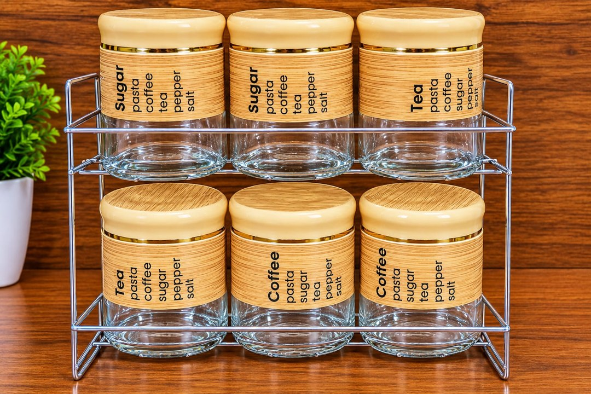
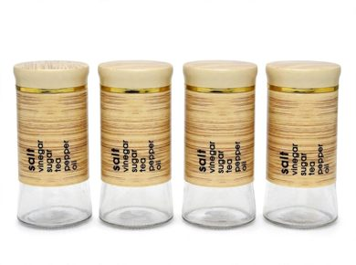
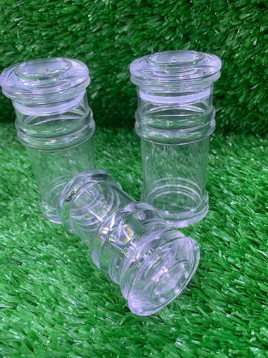
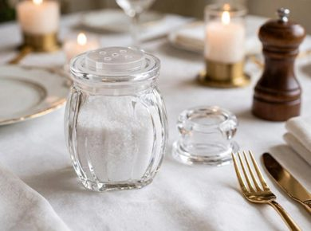
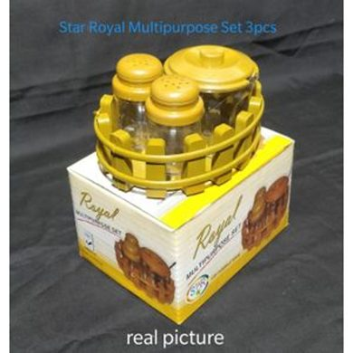
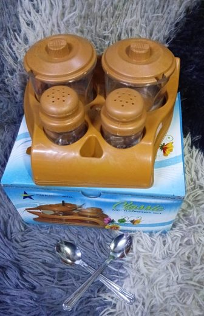
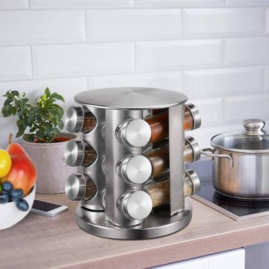
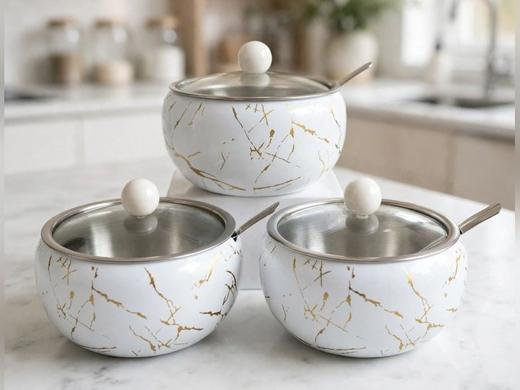

Glass spice & canister jars, 6pcs with 2-tier stand (6012)
KES 2,990 · 6 jars + stand
Key features
- 6 clear glass jars with cream lids and wood-look labels for sugar, tea, coffee, pasta, pepper and salt, on a chrome 2-tier rack
- Keeps the counter neat
| Specifications | |
|---|---|
| Sold as | 6 jars + stand |
| Category | Storage jars, freezer bags & sugar dishes |
| Type | Spice jars & shakers |
| Condition | Brand new |
| Product code | jar-spice-6012 |
Delivery in Nairobi and worldwide (at customer's cost). Pay by M-Pesa to 0114 308 114. Questions? WhatsApp or call 0114 308 114.
More storage jars, freezer bags & sugar dishes

Bamboo spice jars, set of 4KES 1,290

Acrylic salt shakers, set of 4KES 690

Ribbed salt & pepper shakers, pairKES 690

Star Royal salt, pepper & sugar shakers set, 3pcsKES 590

Star Classic multipurpose spice & shakers set, 4 jarsKES 750

Rotating stainless steel spice rack with 12 glass jarsKES 2,790

White and gold marble sugar dishKES 790

Bamboo sugar dishKES 790